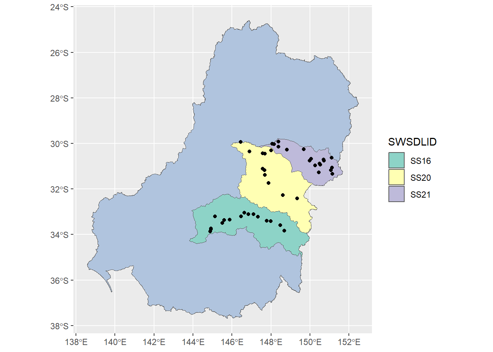

library(werptoolkitr)
library(ggplot2)
library(sf)
library(reticulate) # Not strictly necessary but allows easier referencing of objectsCreating simple scenarios
Overview
Toolkit relevance
The creation of flow scenarios is not part of the toolkit proper. Instead, the toolkit expects to ingest hydrographs and then handles the ongoing response models, aggregation, and analyses. Thus, hydrographs are an essential input to the toolkit. The point of this code is to generate those hydrographs.
This notebook generates 9 simple scenarios by multiplying and dividing hydrographs. This lets us look at a range of changes. The primary needs are multiple guages in multiple catchments (or other spatial units), and scenarios defined by different hydrographs for the same gauge.
Process
We pull a limited set of gauges for a limited time period to keep this dataset small. Primarily, we identify a set of gauges in two catchments, pull them for a short time period, and adjust them to create two simple modified scenarios, with the original data serving as the baseline scenario. Along the way, we examine the data in various ways to visualise what we’re doing and where.
A larger and more complex set of scenarios is created in the flow scaling demonstration, without as much visualisation.
Paths and other data
The shapefiles used to see what we’re doing and do the selecting were produced with within the WERP_toolkit package to keep consistency. It’s possible we’ll add more shapefile creation and move all the canonical versions and their creation to their own data package or repo.
Set the data directory to make that easy to change. These should usually point to external shared directories. For this simple example though, we put the data inside the repo to make it self contained. The flow-scaling analyses sends them externally, which would be more typical.
scenario_dir <- 'more_scenarios'
hydro_dir <- file.path(scenario_dir, 'hydrographs')Language note
This notebook was originally built using only python, and there is an unmaintained python-only version available by contacting the authors. Using Python makes a lot of sense because the underlying data here uses python packages. I’ve moved the active version of this notebook to R, however, when the toolkit became an R package and the flow scaling analyses ended up using R gauge pullers. There is still some remaining python in here (pulling gauges and some minor EWR functions). This notebook provides an example of how to mix R and python code chunks, which we do fairly frequently.
We can access python objects in R with py$objectnameand access R objects in python with r.objectname .
It takes -forever- to do a type translation on the DATETIME column in the gauge data. It’s unclear why (can’t replicate it with any other datetime py object). We work around that by changing it to something simple while still in python, and change it back to datetime in R.
Spatial datasets
We use spatial datasets provided by {werptoolkitr}, which creates a standard set in data_creation/spatial_data_creation.qmd. These are visualised in a separate notebook. Relevant to this scenario creation, we are interested in the gauges, (werptoolkitr::bom_basin_gauges) since this is what were contained in the EWR tool. We use the sdl_units dataset to obtain a subset of gauges for these simple scenarios. Relevant to the case study- the original polygon used was the Macquarie-Castlereagh in the resource_plan_areas, though we seem to use sdl units elsewhere, so I’ll use them here.
Subset the gauges
We need multiple catchments for demos, so let’s use the Macquarie, Castlereagh, Namoi, Lachlan.
catch_demo <- sdl_units %>%
dplyr::filter(SWSDLName %in% c("Macquarie–Castlereagh", "Lachlan", "Namoi"))Get relevant gauges
Cut the bom_basin_gauges from the whole country to just those four catchments
demo_gauges <- st_intersection(bom_basin_gauges, catch_demo)Warning: attribute variables are assumed to be spatially constant throughout
all geometriesHow many are there?
demo_gauges %>% nrow()[1] 295That’s a fair number, but they won’t all be in the EWR.
Extract their names
To feed to the gauge puller, we need their gauge numbers.
gaugenums <- demo_gauges$gaugeFind those relevant to toolkit
We have the list of gauges, but now we need to cut the list down to those in the EWR tool. There’s not any point in pulling gauges that do not appear later in the toolkit.
Which gauges are actually in the EWR tool? The EWR tool has a function, so use that.
TODO THIS FAILS AS OF 1.0.4. I have rolled back to ewr version 1.0.1, since the necessary file just doesn’t exist in 1.0.4 (and in about half the branches on github). This needs to be updated and tested.
Error messages:
FileNotFoundError: [Errno 2] No such file or directory: 'py_ewr/parameter_metadata/NSWEWR.csv'
Error in py_get_attr_impl(x, name, silent) :
AttributeError: module '__main__' has no attribute 'ewrs'A simple {python} chunk works fine in Rstudio and for quarto render from command line. But in vscode, the default (and unchangeable at present) is to start a whole new engine that doesn’t talk to R, rather than using reticulate::repl_python as is done in Rstudio and by quarto itself.
```{python}
from py_ewr.data_inputs import get_EWR_table
ewrs, badewrs = get_EWR_table()
```pdi <- import("py_ewr.data_inputs")Warning in normalizePath(path.expand(path), winslash, mustWork):
path[1]="C:/Users/galen/Documents/code/WERP/demo_pkg_updates/.venv/Scripts":
The system cannot find the path specifiedewrs_in_pyewr <- pdi$get_EWR_table()
names(ewrs_in_pyewr) <- c('ewrs', 'badewrs')What are those gauges, and which are in both the ewr and the desired catchments?
The way that works everywhere but vscode- this seems universal though
ewrgauges <- ewrs_in_pyewr$ewr$Gauge
ewr_demo_gauges <- gaugenums[gaugenums %in% ewrgauges]
length(ewr_demo_gauges)[1] 4747 isn’t too many.
Get all the gauge data
Now we have a list of gauges, we need their hydrographs. We need a reasonable time span to account for temporal variation, but not too long- this is a simple case. Let’s choose 10 years.
starttime = lubridate::ymd(20100101)
endtime = lubridate::ymd(20191231)Pull the gauges with mdba_gauge_getter. The type-translation that happens in here is because translating from python time to R time is extremely slow for this particular case (though not in general).
This again needs a vscode translation
#| message: false
import mdba_gauge_getter as gg
demo_levs = gg.gauge_pull(r.ewr_demo_gauges, start_time_user = r.starttime, end_time_user = r.endtime)
demo_ids = demo_levs.SITEID.unique()
len(demo_ids)
# I think this will work, the above is running
demo_levs['Date'] = demo_levs['DATETIME'].astype(str)gg <- import('mdba_gauge_getter')
demo_levs <- gg$gauge_pull(ewr_demo_gauges, start_time_user = starttime, end_time_user = endtime)
demo_ids <- unique(demo_levs$SITEID)
length(demo_ids)[1] 46Do a bit of cleanup- for some reason demo_levs['VALUE'] is an object and not numeric, and 'DATETIME' needs to be named Date for the EWR tool to read it. I copy the py object to R for this manipulation and visualisation, but we could just proceed in python if we wanted.
Again, we need to change things to run on R
demo_levs <- py$demo_levs
demo_levs$VALUE = as.numeric(demo_levs$VALUE)
# # In python, we just need to change the name of the date column. Here, we need to change the python datetime.date objects to R dates
#
# # Really slow
# # MUCH faster to just make the dates characters in python, and back to dates here.
# rdates <- purrr::map(demodates, py_to_r) %>%
# tibble(.name_repair = ~'Date') %>%
# unnest(cols = Date)
#
# demo_levs <- bind_cols(rdates, demo_levs)
demo_levs <- dplyr::select(demo_levs, -DATETIME) %>%
dplyr::mutate(Date = lubridate::ymd(Date))The new version has to use the reticulate::py_to_r, because when we’re not in the repl, we have an R object to work with for every line of python. Should probably just change to {vicwater}, like we do for flow scaling.
demo_levs <- demo_levs |>
dplyr::mutate(VALUE = as.numeric(VALUE))
# 47 seconds- doesn't matter if preallocated
system.time(
Date <- purrr::map(demo_levs$DATETIME, reticulate::py_to_r)
) user system elapsed
11.31 0.10 24.70 # # 50 seconds
# system.time(
# Date <- lapply(demo_levs$DATETIME,FUN = reticulate::py_to_r)
# )
Date <- tibble::tibble(Date) |>
tidyr::unnest(cols = Date)
demo_levs <- demo_levs |>
dplyr::select(-DATETIME) |>
dplyr::bind_cols(Date) Map the gauges
demo_geo = bom_basin_gauges %>% dplyr::filter(gauge %in% demo_ids)Looks reasonable. Probably overkill for testing, but can do a cut down version too.
The azure boxes have old GDAL, which can’t read WKT2. Need to fix, but in the meantime, force with the crs number.
if (grepl('npd-dat', Sys.info()['nodename'])) {
st_crs(basin) <- 4283
st_crs(catch_demo) <- 4283
st_crs(demo_geo) <- 4283
}(ggplot() +
geom_sf(data = basin, fill = 'lightsteelblue') +
geom_sf(data = catch_demo, mapping = aes(fill = SWSDLID)) +
geom_sf(data = demo_geo, color = 'black') +
scale_fill_brewer(type = 'qual', palette = 8))
Make test scenarios
To generate simple scenarios that cover a range of flow conditions, we multiply and divide the baseline data by 1, 1.1, 1.25, 1.5, and 2, yielding symmetric changes up and down in relative flow. This section could easily be modified for other simple scenarios. More complex scenarios are created in the flow scaling analyses.
Make the data look like IQQM
The EWR tool has the capacity to pull gauge data directly, but because we have modified these data, they need to enter the EWR tool through scenario_handling, and so need to have a format the EWR tool can parse as output from one of the scenario generating tools it uses (IQQM, Source, etc). This could be avoided by splitting up process_scenarios into a read-in bit and a bit that calls evaluate_EWRs.calc_sorter. In the meantime, we modify this data to work if we tell the EWR tool it is IQQM.
Telling EWR the data is IQQM allows using scenario_handling. This requries having a date column Date and other columns with gauge numbers for names. The EWR tool can have multiple gauges, with each having its own column. Werptoolkitr expects directories for each scenario, with any number of csvs of hydrographs inside, (e.g. it could be one csv with columns for each gauge, or each csv could have a single gauge), which is handled by paths_gauges internally to the “Scenario controller” part of werptoolkitr. Here, we save a single csv with many gauges for each scenario. The flow scaling example takes the opposite approach, with one gauge per csv due to different time periods.
Save the output
This structure is useful, but it also may change once we have actual scenarios. And will almost certainly look different for netcdfs. Retaining the dir/file structure even with one file allows easier changes and more flexibility.
multipliers <- c(1.1, 1.25, 1.5, 2)
scenemults <- c(1/rev(multipliers), 1, multipliers)
scenenames <- c(paste0('down', as.character(rev(multipliers))),
'base',
paste0('up', as.character(multipliers))) |>
stringr::str_replace('\\.', '_')
# the full scenarios
for (x in scenenames) {
scenedir = file.path(hydro_dir, x)
if (!dir.exists(scenedir)) {
dir.create(scenedir, recursive = TRUE)
}
}Create clean dataframes to save. Could be fancy with a function and a purr, but I’m just saving, so a simple loop should be fine.
I’m not providing a toolkit function to write scenario metadata, since the scenarios will come from elsewhere. But we need it, so make some here (both inside and outside the directories, since we’re not sure what the final form is yet).
if (params$REBUILD_DATA) {
for (i in 1:length(scenenames)) {
demo_levs %>%
dplyr::mutate(VALUE = VALUE * scenemults[i]) %>%
dplyr::select(Date, VALUE, SITEID) %>%
tidyr::pivot_wider(id_cols = Date,
names_from = SITEID,
values_from = VALUE) %>%
readr::write_csv(file.path(hydro_dir, scenenames[i],
paste0(scenenames[i], '.csv')))
# make JSON metadata
jsonlite::write_json(list(scenario_name = scenenames[i],
flow_multiplier = scenemults[i]),
path = file.path(hydro_dir, scenenames[i], 'metadata.json'))
}
}That set of hydrographs can now be used as starting data for a demonstration of the toolkit proper.
Make some metadata for all scenarios too (both yaml and json for now).
scenario_meta <- list(scenario_name = scenenames,
flow_multiplier = scenemults)
# I don't know the format we'll be using, but this works to create yaml metadata
yaml::write_yaml(scenario_meta,
file = file.path(hydro_dir, 'scenario_metadata.yml'))
# and this does the same with JSON
jsonlite::write_json(scenario_meta,
path = file.path(hydro_dir, 'scenario_metadata.json'))